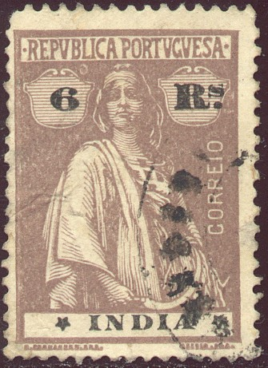
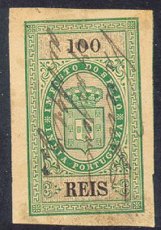
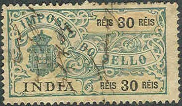

Return To Catalogue - Portuguese India first primitive issues - Portuguese India Crown issue - Portuguese India 1886-1913 - Portugal
Note: on my website many of the
pictures can not be seen! They are of course present in the
catalogue;
contact me if you want to purchase the catalogue.
For stamps of Portuguese India 1886-1913, click here.
1 r olive 1 1/2 r green 2 r black 2 1/2 r green 3 r lilac 4 r blue (1922) 4 1/2 r brown 5 r green 6 r brown 9 r blue 10 r red 1 t violet 1 1/2 t green (1922) 2 T blue 2 1/2 T blue (1922) 3 T brown 3 T 4 r brown (1922) 4 T grey 8 T lilac 8 T brown (1922) 12 T brown on green 1 Rp brown on red 1 Rp brown (1922) 2 Rp orange on red 2 Rp yellow (1922) 3 Rp green on blue 3 Rp green (1922) 5 Rp red (1922) Surcharged
'1 1/2 REAL' (red) on 2 r black (1922) '1 1/2 R.L' on 8 T lilac (1932) '2 1/2 T.' on 3 T 4 r brown (1932)
Specialist still distinghuish stamps issued on glazed paper and on normal paper.
Value of the stamps |
|||
vc = very common c = common * = not so common ** = uncommon |
*** = very uncommon R = rare RR = very rare RRR = extremely rare |
||
| Value | Unused | Used | Remarks |
| 1 r | vc | vc | |
| 1 1/2 r | vc | vc | |
| 2 r | c | vc | |
| 2 1/2 r | c | vc | |
| 3 r | c | vc | |
| 4 r | c | c | |
| 4 1/2 r | c | c | |
| 5 r | c | c | |
| 6 r | c | vc | |
| 9 r | c | c | |
| 10 r | c | c | |
| 1 T | c | vc | |
| 1 1/2 T | c | c | |
| 2 T | c | c | |
| 2 1/2 T | c | c | |
| 3 T | * | c | |
| 3 T 4 r | * | * | |
| 4 T | * | * | |
| 8 T lilac | * | * | |
| 8 T brown | * | * | |
| 12 T | * | * | |
| 1 Rp brown on red | ** | ** | |
| 1 Rp brown | * | * | |
| 2 Rp orange on red | ** | ** | |
| 2 Rp yellow | ** | ** | |
| 3 Rp green on blue | ** | ** | |
| 3 Rp green | ** | ** | |
| 5 Rp | *** | *** | |
Surcharged |
|||
| 1 1/2 r on 2 r | c | vc | |
| 1 1/2 RL on 8 T | * | c | |
| 2 1/2 T on 3 T 4 r | * | * | |
0:00:05,48 Rps green (black overprint and value inscription) 0:01:09,94 Rps green (black overprint and value inscription) 0:02:03,43 Rps green (red overprint and black value inscription)
Value of the stamps |
|||
vc = very common c = common * = not so common ** = uncommon |
*** = very uncommon R = rare RR = very rare RRR = extremely rare |
||
| Value | Unused | Used | Remarks |
| 0:00:05,48 Rps | c | c | |
6 r brown 1 T lilac
1 r green (statue) 2 r brown (signature) 6 r lilac (image of the Saint) 1 1/2 T brown (design almost identical to 6 r value) 2 T blue (church in Nova Goa) 2 1/2 T red (design almost identical to 1 r)
1 r light brown 2 r brown 4 r lilac 6 r dark green 8 r black 1 T grey 1 1/2 T red 2 T brown 2 1/2 T blue 3 T light blue 5 T orange 1 R olive 2 R red 3 R orange 5 R light green Surcharged
'1 Real' and bar (red) on 8 r black '1 REAL' and bar on 5 T orange '2 Reis' and bar (red) on 8 r black '3 Reis' and bar (blue) on 3 R orange '3 Reis' and bar on 2 T brown '3 REIS' on 1 1/2 T red '6 Reis' and bar (red) on 2 1/2 T blue '6 Reis' and bar on 3 T light blue '1 tanga' and bars on 1 1/2 T red '1 TANGA' on 2 T brown '1 tanga' and bars on 1 R olive '1 tanga' and bars on 2 R red 1 t on 5 R light green Overprinted "Porteado" and surcharged
'3 REIS Porteado' (red) on 2 1/2 T blue '6 REIS Porteado' (red) on 3 T light blue '1 TANGA Porteado' on 5 T orange
Vasco da Gama on ship 1 r grey and black 2 r light brown and black 3 r dark brown and black 6 r green and black de Alberqueque (man on horse) 10 r red and black 1 T lilac and black 1 1/2 T red and black Surcharged
'1 Real' on 10 r red and black (1950?) '2 Reis' on 10 r red and black (1950?) Infante d'Henrique 2 T orange and black 2 1/2 T blue and black 3 T black Surcharged '1 real' on 2 1/2 T blue and black (1950?) '3 reis' (red) on 2 1/2 T blue and black (1950?) '6 reis' (red) on 2 1/2 T blue and black (1950?) '1 tanga' (red) on 2 1/2 T blue and black (1950?) Dam (Fomento)
5 T lilac and black 1 Rp brown and black 2 Rps green and black Afonso de Albuqueque 3 Rps violet and black 5 Rps brown and black Airmail 1 T orange and black 2 1/2 T violet and black 3 1/2 T orange and black 4 1/2 T blue and black 7 T brown and black 7 1/2 T green and black 9 T brown and black 11 T lilac and black Overprinted "EXPOSICAO INTERNACIONAL DE NOVA YORK 1939-1940" in red 4 1/2 T blue and black
Similar stamps, issued for other Portuguese colonies:
2 r green 3 r green 4 r orange 5 r grey 6 r grey 9 r brown 1 T orange 2 T brown 5 T blue 10 T red 1 Rupia violet
Overprinted "REPUBLICA" in red (unless otherwise stated) 2 r green 3 r green 4 r orange 5 r grey 6 r grey 9 r brown 1 T orange 2 T brown 5 T blue 10 T red (overprint green) 1 Rupia violet
Value of the stamps |
|||
vc = very common c = common * = not so common ** = uncommon |
*** = very uncommon R = rare RR = very rare RRR = extremely rare |
||
| Value | Unused | Used | Remarks |
| 2 r | c | c | |
| 3 r | c | c | |
| 4 r | c | c | |
| 5 r | c | c | |
| 6 r | c | c | |
| 9 r | c | c | |
| 1 T | c | c | |
| 2 T | * | * | |
| 5 T | * | * | |
| 10 T | * | * | |
| 1 Rp | * | * | |
| Overprinted
"REPUBLICA"; two types: Lisbon overprint and local overprint |
|||
| 2 r | vc | vc | Local overprint: c |
| 3 r | vc | vc | Local overprint: c |
| 4 r | c | c | |
| 5 r | c | c | |
| 6 r | c | c | |
| 9 r | c | c | Local overprint: * |
| 1 T | c | c | |
| 2 T | c | c | Local overprint: * |
| 5 T | * | * | |
| 10 T | * | * | |
| 1 Rp | * | * | Local overprint: ** |
2 r red and black 3 r blue and black 4 r yellow and black 6 r green and black 1 T brown and black 2 T dark brown and black
Similar stamp for Portuguese Africa issued
in 1945
6 r red (portrait of Pompal) 6 r red (Pompal shows rebuilding plan) 6 r red (statue) With addtional inscription "MULTA" (postage due) 1 T red (portrait of Pompal) 1 T red (Pompal shows rebuilding plan) 1 T red (statue)
Many Portuguese colonies also issued similar stamps (in other colours). Click here for more information. Examples:
Examples

In the above design have appeared: 10 r, 20 r, 30 r, 40 r, 60 r, 80 r, 100 r, 200 r, 300 r, 400 r, 500 r, 600 r, 700 r, 800 r, 900 r, 1$000, 2$000, 3$000, 4$000, 5$000, 6$000, 7$000, 8$000 and 9$000 (all in the colours green and value in brown). Several surcharges exist. In 1895 the value indication was changed.

In this design exist many values, also in 1912 they were overprinted with "REPUBLICA" in red (see image above).
A very nice pdf document can be found at: http://www.caleida.pt/filatelia/fp/ebook/bfd001_p.pdf (website does no longer seem to exist) written by Joaquim Leote (in Portuguese); this award winning document describes the postal history of Portuguese India from pre-philatelic to the first issues. Another document can be found at: http://www.filatelicamente.online.pt/l001/l001_06i.html (same author, this website also no longer exists).

{kind=link}